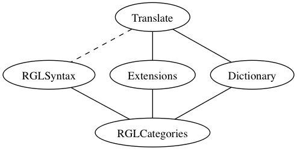

From Resource Grammar to Wide Coverage Translation with GF
Aarne Ranta et al.
Work in progress, January 2014
How to use it
This is a document about a wide-coverage translation system in GF. If you just want to try it before reading more,
here are the main modes of getting started:
1. Run on our server. Forthcoming.
2. Get an Android app. Forthcoming.
3. Compile and run in the shell. Get the latest GF sources (with darcs or github) and then
GF and the RGL
GF, Grammatical Framework, was originally designed for the purpose of multilingual controlled language systems,
which would enable high-quality translation on limited domains. The abstract syntax of GF defines the semantic
structures relevant for the domain, and the concrete syntaxes map these structures to grammatically correct
and idiomatic text in each target language. The reversibility of GF enables both generation and parsing,
and thereby translation where the abstract syntax functions as an interlingua.
As a bottle-neck of GF applications, it was soon realized that the definition of concrete syntax requires a lot
of manual work and linguistic skill, because of the complexities of natural language syntax and morphology. Some of
the complexities can be ignored in a small system. For instance, in a mathematical system, it may be enough to
use verbs in the present tense only. But very much the same linguistic problems must be solved again and again
in new applications: French verb inflection is the same in mathematics as in a tourist phrasebook. To solve
this problem, the GF Resource Grammar Library (RGL) was developed, to take care of "low-level" linguistic
rules such as inflection, agreement, and word order. This enables the authors of application grammars to focus
on the semantics (when designing the abstract syntax) and on selecting RGL functions that produce the idioms they
want. The RGL grew into an international open-source project, where more than 50 persons have contributed to
implementing it for 29 languages by the time of writing this.
Scaling up GF translation
The RGL was thus originally designed to be used just as its name says: as a library
for application grammars. Only the latter were meant to be used as top-level grammars, i.e. for
parsing, generation, and translation at run time. Little attention was therefore
paid to the usability of RGL as a top-level
grammar by itself. But when applications accumulated, ranging from technical text to spoken dialogue, the coverage
of the RGL grew into a coverage that approximates a "complete grammar" of many of the languages.
And recently, there has indeed been success in using the RGL as a wide-coverage translation grammar,
mainly due to Krasimir Angelov's efforts to scale up the size of GF applications from language fragments
to open-text processing. This success is a result of four lines of development:
- More efficient processing, both due to better algorithms and to an optimized C implementation of a PGF
interpreter, the C runtime, achieving speeds competitive with the state of the art, e.g. the Stanford parser.
This development is also based on the work of Peter Ljunglöf on GF parsing and Lauri Alanko on the C runtime.
- Large-scale dictionaries, both manually built and extracted from free sources, and linked into a multilingual
translation dictionary now covering 10k to 60k entries for eight languages. This work was started by Björn Bringert,
who ported the Oxford Advanced Learner's Dictionary of English to GF.
- Probabilistic disambiguation, using a model trained from the Penn Treebank. Due to the common abstract syntax,
the same model can be readily used for other languages as well, even though the adequacy of this transfer has not
been systematically evaluated.
- Robust parsing, which recovers from unknown words and syntax by introducing metavariables ("question marks")
and returning chunk-by-chunk translations. This leads to loss of quality, but fulfills the principle that
"something is better than nothing".
Remaining problems
The result of all this work is a wide-coverage translation system, which can be used in the same way as Google
Translate, Bing, Systran, and Apertium - to "translate anything", albeit with a varying quality. At the moment of
writing, the performance is not yet generally on the level with the best of the competition, but shows some promising
improvements in e.g. long-distance agreement and word order. To make these advantages into absolute improvements, we
will need to fix problems that the other systems (or at least some of them) get right but where GF translation
often fails:
- Lexical coverage, to eliminate parsing failures due to unknown words.
- Disambiguation, with more sophisticated than the essentially context-free tree model used now.
- Speed, which gets worse with long sentences and with more complex languages.
- Idiomacy, due to the lack of idiomatic constructions that are not compositional and therefore don't get right
in the RGL but are often correct in phrase-based SMT.
Advantages of GF translation
Given that these issues get resolved, the strengths of the GF approach can be made more visible:
- Grammaticality, in particular the already mentioned issues of agreement and word order.
- Predictability, in the sense that a local change in the input usually results in a corresponding
local change in the output (unless otherwise required by idiomacy).
- Feedback, i.e. the ease of showing the confidence level of the translation, alternative translations,
and linguistic information.
- Adaptability, i.e. the ease of fixing bugs, adapting the system to special domains, and personalizing it.
This can be done with great precision. For instance, a bug in a grammar can be fixed without
breaking anything else.
- Light weight. The system runs on standard laptops and even on mobile phones; the size of the run-time
system for all pairs of 8 languages is under 20MB (on the Android platform), and recompiling the whole
system (e.g. after bug fixes or
domain adaptation) is a matter of a few minutes, where corresponding figures for SMT systems are gigabytes of size
and days of retraining.
- Multilinguality, in the sense that once the parsing of the input is settled, the output can be readily
rendered into all other languages,
and also in the sense that the GF model works equally well for any language pair.
Wanted: more work, new ideas
The recipes for improvement are, as always, more work and new ideas. Each of the four weaknesses mentioned
above can be relieved by more work - in particular, lexical coverage by more work on the lexicon, since
automatic extraction methods cannot really be trusted. As for disambiguation, new ideas about probabilistic
tree models are being discussed. As for speed, new ideas on parsing (in particular, the integration of disambiguation
with parsing) would help, but also the complexity of grammatical structures plays a major role. As for idiomacy,
more work is being done in introducing constructions (non-compositional syntax rules, generalizing the notion of
multiword expressions, in particular, phrases in SMT), but also new ideas are being discussed on how to
extract such constructions from e.g. phrase tables.
In the following, we will focus on describing the role of grammar in the GF translation system - in particular, how
RGL can be modified to become usable as a top-level grammar for translating open text.
As RGL was not meant to be used for parsing open text, but rather for the controlled language generation task,
it has serious restrictions:
- Limited coverage. The RGL does not cover all structures in any language - hence it is likely to fail when
parsing unlimited text.
- Semantic overgeneration. Semantic distinctions, such as between mass and count nouns, or place and manner
adverbials, are assumed to be defined in application grammars; the RGL just defines the combinatorics of
elements, but doesn't prescribe which elements can really go together.
- Spurious ambiguities. RGL parsing creates more ambiguities than what would be necessary, if there
was more semantic control. In addition, there are partly overlapping structures, which generate
spurious syntactic ambiguities.
Example: the very liberal apposition function.
- Inefficiency. Partly because of ambiguities, partly of the deep nesting and complex data structures, parsing
with the RGL can be very slow when compared to application grammars, even the comprehensive ResourceDemo grammar.
For some languages (Romanian, versions of French and Finnish), parsing is not practically possible at all because
PGF generation fails for memory reasons.
- Syntax orientation. The structures of the RGL are rather superficial and don't guarantee translation
equivalence when used as interlingua.
- Coarse categories. This is a particular aspect of syntax orientation, and causes at the same time overgeneration
and spurious ambiguities.
Example: the category
Adv.
What speaks for using RGL
Despite these problems, the RGL has shown to be a possible starting point for large-scale translation. It has a couple
of advantages speaking for this:
- Coverage. Even though not complete, the RGL has grown into a coverage that is close to complete enough; work
with English shows that just about 20% more constructions can take us there.
- Maintainability. The RGL is constantly developed and maintained on its own right, and it makes sense to take
advantage of this and avoid duplicated work with some other large-scale grammar.
Of course, we are still left with the other
option of addressing translation with an application grammar, something
similar to the ResourceDemo with flatter and more semantic structures. But this would in turn require
the replication of many rules, even though it would be to a large extent doable by using a functor, that is,
by just one set of rules covering all languages.
The structure of the wide-coverage translation grammar
Thus the path chosen is a mixture of RGL and application grammar. In brief, the translation grammar consists of
- Selected RGL modules and functions, as they are (using restricted inheritance); around 80% of the syntax.
- Overridden RGL functions, with more general types; just a few of them.
- Overridden RGL linearizations, typically with more variants in individual languages; just a few, but
increasing.
- Syntax extension, new categories and functions, around 20% of the syntax, and increasing.
- Big lexicon, with an abstract syntax of 65k lemmas, increasing.
- Constructions, inspired by (and partly derived from) Construction Grammars, to capture idioms that
involve specific lexical items and are therefore "between the syntax and the lexicon".
The following picture shows the principal module structure of the translation grammar.

Here is a description of each of the modules:
- Translate is the top module, which combines the RGL syntax with syntax extensions and a dictionary.
The RGL syntax is not inherited in its entirety, which is indicated by a dashed line. The overridden abstract
syntax functions (common to all languages) are replaced by functions in the Extensions module, whereas the
overridden concrete syntax definitions (specific to each language) are defined in this Translate module.
This consists of the module named
Translate.
- RGLSyntax stands for the standard RGL module for syntax, excluding the RGL test lexicon and
the language-specific extensions of it. This consists of the standard module named
Grammar and
the emerging module named Construction.
- Extensions stands for the syntax extensions added to the RGL syntax. This consists of the module
named
Extensions.
- Dictionary is a large-scale multilingual dictionary. Its abstract syntax uses as identifiers English words
suffixed by categories and word sense information. This consists of the module named
Dictionary.
- RGLCategories stands for the type system of the standard RGL, the module named
Cat.
Where and why the translation grammar differs from the RGL
A guiding principle is thus that the translation grammar preserves as much as possible of the RGL, so that
duplicated work is avoided. But as the purposes of the two are different, not everything is possible. Two
diverging principles have already been mentioned:
- Free variation. The RGL bans free variation, because library users need to have full control on selecting
variants. For instance, English negation has two forms, contracted (don't) and uncontracted (do not),
which in the translation grammar are treated as variants. But RGL users sometimes need to choose the one or the
other, for instance, excluding contracted negation in formal style.
- Semantic distinctions. The RGL avoids semantic distinctions that are not absolutely necessary for syntax.
The reason for this is the ambition to keep the library as simple as possible, in particular for the voluntary
implementors of new languages. But meaning-preserving translation needs more distinctions, for instance, in
word senses, subcategorizations, selection restrictions, and tense and aspect systems.
The old design principles of the RGL are thus kept in force, and this is made possible by separating parts of the
translation grammar modules from the RGL.